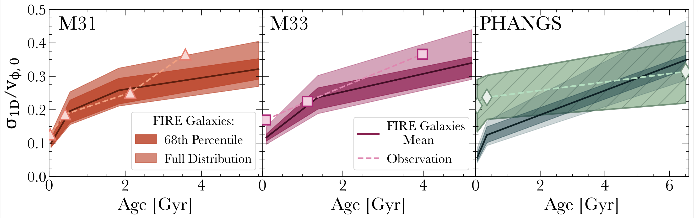
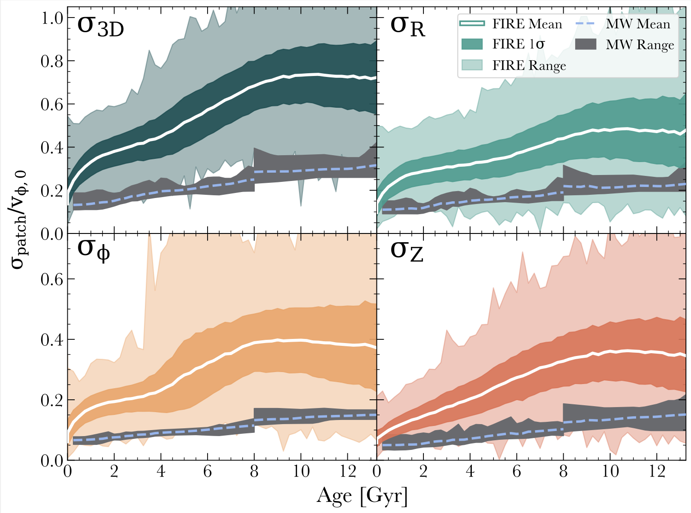

Can Cosmological Zoom-In Simulations Match the Kinematics of Real Disks? Yes! (But Not the Milky Way)
Age-velocity dispersion relations in the FIRE-2 simulations exhibit remarkable similarity to those observed in M31 and M33:
Comparison of stellar velocity dispersion (normalized by galaxy rotational velocity) versus age in the FIRE-2 simulations against observations of M31, M33, and 16 galaxies from the PHANGS-MUSE survey.
In measuring FIRE-2, we match the inclination angle, radial selection, spatial aperture size, and age binning of each corresponding observational sample. The solid lines and shaded regions show the median, 68 percent scatter, and full range scatter across 11 FIRE-2 galaxies. The dashed lines with markers show observations from M31 (Dorman et al. 2015), M33 (Quirk et al. 2022), and 16 PHANGS-MUSE galaxies (Pessa et al. 2023).
The trends for these 11 FIRE-2 galaxies are broadly consistent with those measured across this sample of 18 nearby galaxies , with the key exception being young stars in PHANGS, which have higher dispersions than FIRE-2.
However, agreement with M31 and M33 does not extend to the MW:
Comparing stellar σ(τ) / vφ,0 versus age, τ, in the FIRE-2 simulations against observations of the MW for σ3D, σR, σφ, and σZ.
The solid white lines show the mean σ(τ) / vφ,0, assuming 20% age uncertainties, across all "solar neighborhood" apertures in 11 simulations, while the dark and light shaded regions show the 68% and full scatters across these apertures. For the MW, we show the mean and full scatter of σ(τ) / vφ,0 from 13 observational works.
In general, FIRE-2 has significantly hotter stellar kinematics than the MW, with the exception of the youngest stars. This offset is most pronounced for σ3D and σφ, while σR shows better agreement.
That said, these FIRE-2 galaxies do have some (rare) apertures that are as kinematically cold as the MW .
McCluskey et al. (2025) explore these observations in detail, both for the MW and for external disks. Here we also suggest that the gap between the MW and zoom-in simulations reflects the Galaxy’s unusual past as much as, if not more than, shortcomings in the simulations’ modeling.